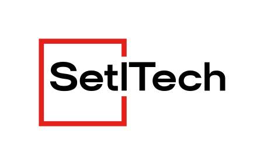
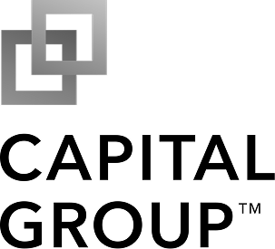
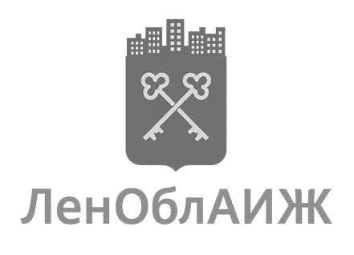
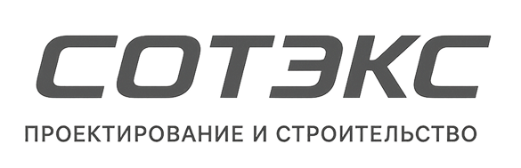
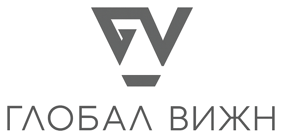

Setl Tech разрабатывает программные решения для застройщиков — от управления проектами до сквозной аналитики. Инструменты, которые работают так же, как вы думаете о стройке.
Доверяют ведущие застройщики России



